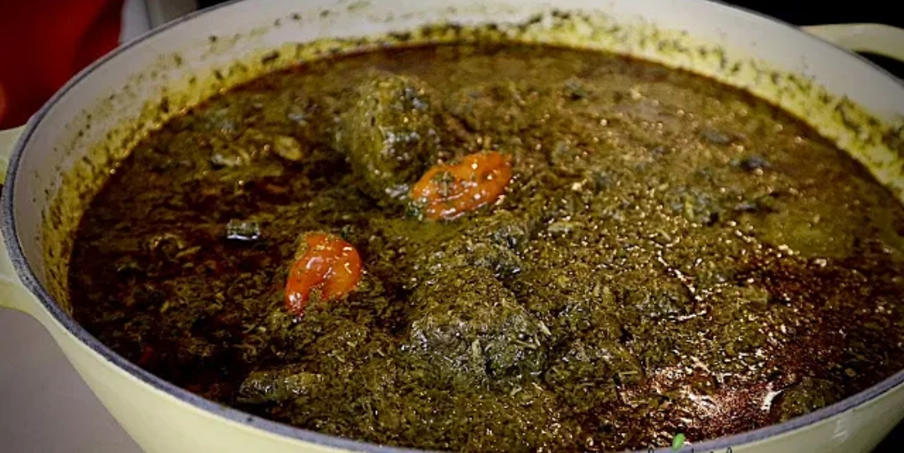

Cassava-Leaves

Size = 432.74 kb | Resolution 1080x542
Cassava-Leaves is a traditional dish in grand cape-mount county Liberia.
It is also popular in montserrado and monrovia.
It can be pair with rice for a delicious meal.
Note: For this recipe i will be using red oil.
Ingredients
- Fresh Cassava-Leaves
- Pepper
- Red oil
- Fish, Crab, Crab-Fish or meat
- Salt
- Seasoning
- Vita
- Oions
Steps
- Wash and grind the cassava-leaves.
- Clean the fish, crab or meat and season it and steam it for 10 mins.
- Put the cassava-leaves in the pot, add little water and seasoning .>
- Add oions or garlic(make sure to add 2 bulb of medium oions or 2 cloves of garlic).
- Place it on the fire and wait for 10 mins for it to steam.
- Add water, pepper, the fish,crab or meat and add 2 vita.
- Let it boil for 15 mins .
- Add the red oil.
- Reduce the heat and let it boil slowly until you are sure the water is dry out..